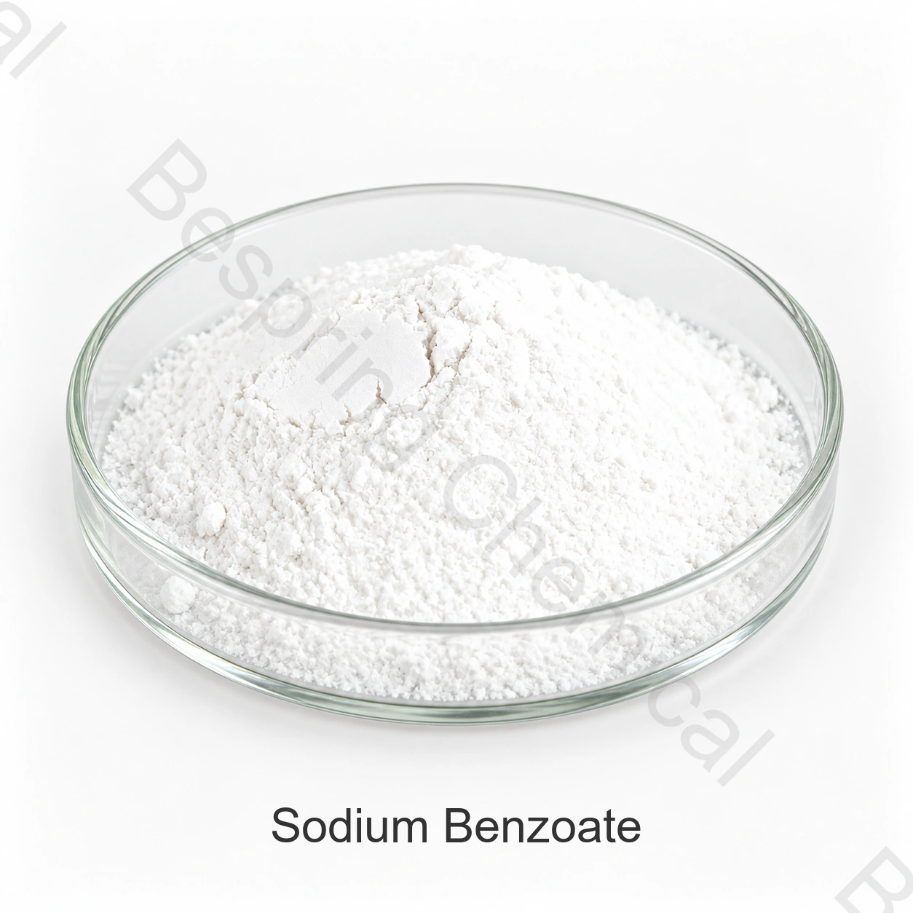

Пищевой ингредиент · E211 / INS 211
Бензоат натрия пищевой (E211)
Бензоат натрия — натриевая соль бензойной кислоты и консервант, применяемый главным образом в кислых напитках и пищевых продуктах. Эффективность зависит от pH и проверяется в полной системе консервации.
- Продукт
- Бензоат натрия пищевой (E211)
- CAS
- CAS 532-32-1
- Идентификация
- E211 / INS 211
- Формула / справка
- C₇H₅NaO₂

Изображение продукта · уточните марку и упаковку при заказе
Укажите применение, спецификацию, критические показатели, объем, упаковку и пункт назначения.
КачествоПищевое, при условии квалификации производителя
УпаковкаСогласуйте тип, массу нетто и паллетирование
ПоставкаРасчет по объему, пункту назначения и Incoterm
Контроль партииАктуальная спецификация и паспорт качества (COA)
Идентичность продукта
Что это за продукт и как составить спецификацию
Бензоат натрия — натриевая соль бензойной кислоты и консервант, применяемый главным образом в кислых напитках и пищевых продуктах. Эффективность зависит от pH и проверяется в полной системе консервации.
Для промышленной закупки одного торгового названия недостаточно. Запросите актуальную спецификацию конкретного производителя, методы анализа, типовой COA и паспорт качества партии. Соответствие оценивают для конкретного применения, согласованного стандарта и рынка реализации готового продукта.
Функции в пищевых продуктах
Основные функции
Поддержка стабильности в течение срока годности
Более растворимая альтернатива бензойной кислоте
Самостоятельное или комбинированное применение при нормативном разрешении
Оценка применения
Области применения
Кислые напитки и концентраты
Соусы, приправы и консервы
Фруктовые наполнители и полуфабрикаты
Другие разрешённые категории пищевой продукции
Перечень применений носит справочный характер и не является общим разрешением или рекомендацией по дозировке. Проверьте техническую пригодность, допустимый уровень и требования к маркировке готового продукта.
Выбор марки
Критерии выбора для оптовой закупки
Чистота, влажность, кислотность или щёлочность и примеси
Порошок, гранулы или малопылящая форма
pH и полный состав конечного продукта
Предельный уровень, маркировка и взаимодействия с компонентами рецептуры
Бензоат натрия не является универсальным решением. Проверяйте pH, нормативный предел, процесс, упаковку, хранение и срок годности готового продукта.
Документы и поставка
Документы, упаковка и логистика
Для аттестации поставщика запросите согласованную спецификацию, техническое описание, SDS, типовой COA, нормативные декларации и сертификаты, действующие для продукта, предприятия и периода поставки. Согласуйте массу нетто, материал мешка и вкладыша, паллетирование, маркировку, срок годности, хранение, место назначения и условия Инкотермс.
Независимый технический источник
Независимый технический источник
Ознакомьтесь с официальным техническим источником по этому продукту для проверки идентичности и нормативного контекста. В каждой поставке приоритет имеют договорная спецификация и действующие требования рынка назначения.
Вопросы закупщиков
Частые вопросы
Какие данные нужны для коммерческого предложения?
Укажите применение, стандарт и критичные пределы, годовой объём и размер партии, упаковку, место назначения, Incoterms, сертификаты и требуемую дату. Это позволит сравнить технически эквивалентные предложения.
Как подтвердить пищевое качество материала?
Проверьте спецификацию конкретного производителя, документы системы качества, применимые декларации и COA партии. Одно название продукта не подтверждает пищевое качество.
Можно ли применять продукт в любом пищевом продукте и любой стране?
Нет. Проверьте категорию пищевого продукта, технологическую функцию, предельный уровень и маркировку по действующим требованиям целевого рынка.
Закупка по согласованной спецификации
Запросить предложение на Бензоат натрия пищевой (E211)
Сообщите область применения, целевой стандарт, критические показатели, объем, упаковку, пункт назначения и перечень необходимых документов.
Документы на продукт
Запросить документы
Укажите марку и рынок назначения, чтобы уточнить доступность документов для вашего заказа.
Внешний источник не заменяет сертификат партии или спецификацию Bespring.